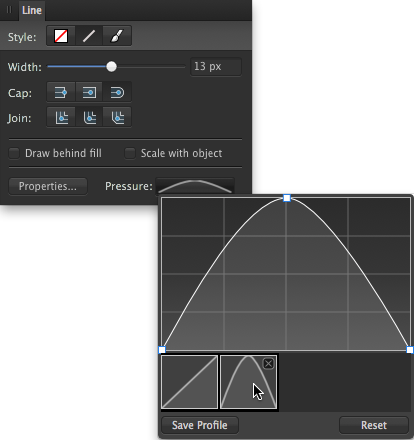

Приложение Affinity Designer обеспечивает полную гибкость при использовании графических планшетов или устройств с технологией Force Touch для рисования и закрашивания с учетом силы нажима. Если вы предпочитаете работать с мышью или трекпадом (а не устройством Force Touch), программа Affinity Designer предоставляет возможность для использования функции имитации силы нажатия.
Приложение Affinity Designer обеспечивает полную гибкость при использовании графических планшетов для рисования и закрашивания с учетом силы нажима. Если вы предпочитаете работать с мышью, программа Affinity Designer предоставляет возможность для использования функции имитации силы нажатия.
Какой бы инструмент не использовался — векторный инструмент «Перо», «Карандаш» или «Кисть», пиксельный инструмент «Кисть» или инструменты ретуширования, — все, что нужно сделать, это подключить свое устройство, после чего вы сразу же можете приступать к работе.
Программа Affinity Designer также поддерживает функцию настройки чувствительности мыши к скорости нажатия по умолчанию, которую обязательно оценят те пользователи, которые предпочитают работать именно с этим устройством. Используя те же инструменты кисти, что и раньше, теперь вы сможете работать с функцией имитации силы нажатия, которая зависит от скорости перемещения указателя мыши.
Автоматическое управление силой нажатия обеспечивается за счет контроллера кисти, который по умолчанию работает в автоматическом режиме: во время рисования он определяет тип устройства ввода и изменяет размер кисти, величину потока и т. д. на основании вводимых значений для следующих параметров: «Нажим», «Скорость», «Настройки кисти по умолчанию» или «Нет». Если выбран вариант «Нет», кисть всегда будет иметь фиксированные размер, величину потока и т. д. В противном случае свойства мазка кисти будут изменяться от минимального до максимального значения (например, полная ширина мазка кисти).
Помимо возможности ввода значения одного из параметров, вы также можете корректировать параметры нажима или скорости для кисти.
Если вы хотите создать и использовать пользовательский профиль нажима, который может быть применен к ранее нарисованному мазку, сделать это можно на панели «Обводка». Вы можете сохранить его с исходными данными или же внести изменения перед сохранением.
